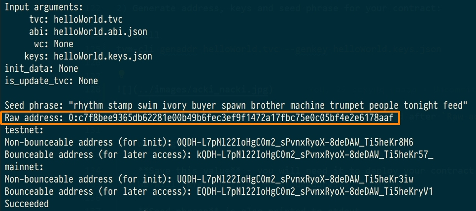
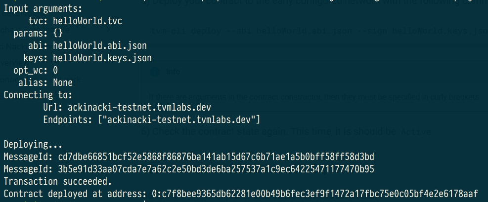
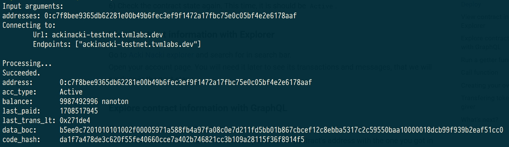
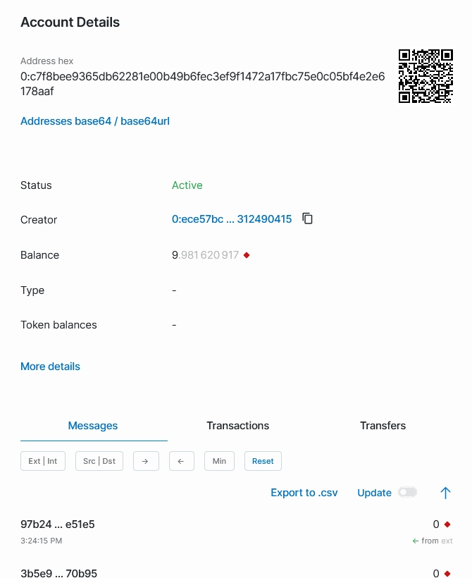
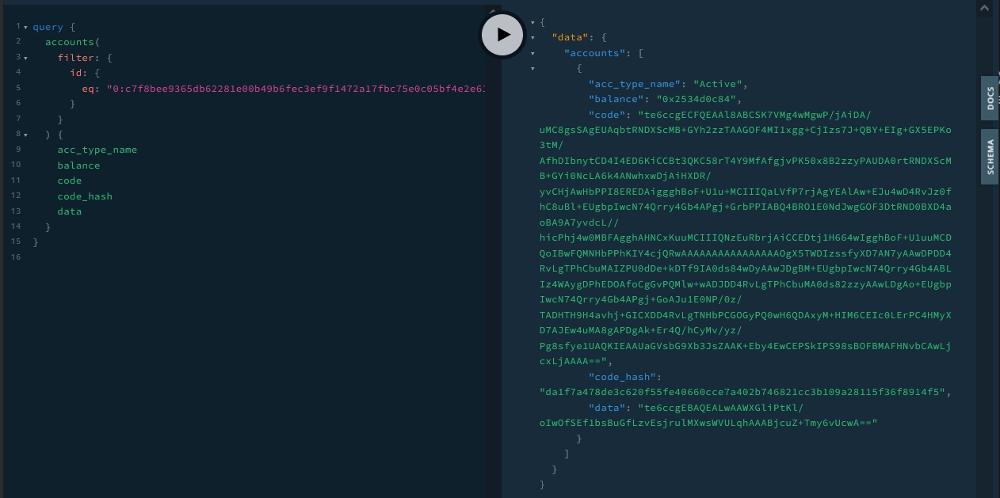
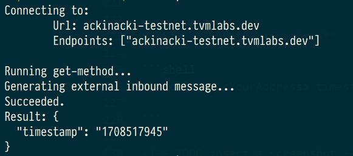

Quick start for TVM CLI
Guide overview
This guide will help you get started with such essential Acki Nacki tools as:
- TVM-CLI
- Solidity Compiler
- Acki Nacki Blockchain Explorer
- Node GraphQL API
You will learn how to:
- Create and compile your first Solidity contract
- Deploy your first contract
- Run it on-chain
- Run a getter-function
- Make a transfer
- Explore contract data in Explorer and GraphQL playground
- Configure your own giver
Install TVM-CLI
Download and install the TVM-CLI for the platform you need from here
Create and compile contract
Create and compile a contract using the following instruction.
As a result, you will have 4 files:
helloWorld.sol- source code of your contract;helloWorld.code- it contains the assembly code of the contract;helloWorld.tvc- binary code of your contract (the contents of this file will be deployed on network);helloWorld.abi.json- describe the interface of the contract.
Deploy
Let's deploy the contract to Acki Nacki development blockchain
at ackinacki-testnet.tvmlabs.dev
1) Make sure TVM-CLI is in $PATH:
2) Generate address, keys and seed phrase for your contract:
Address of your contract in the blockchain is located after Raw address:

IMPORTANT
Save Raw address value - you will need it to deploy your contract and to work with it.
We will refer to it as <YourAddress> below.
Seed phrase is also printed to stdout.
Key pair will be generated and saved to the file helloWorld.keys.json.
Danger
Write your seed phrase down and store it somewhere safe, and never share it with anyone. Avoid storing it in plain text or screenshots, or any other non-secure way. If you lose it, you lose access to your assets. Anyone who gets it, gets full access to your assets.
Also, save the file with a pair of keys in a safe place.
3) Get some test-tokens to your account.
Note
You will need to send some tokens to the address before the actual deployment. Acki Nacki deploy is fee-based, so your new contract will be charged for this.
(You will need about 10 tokens to deploy)
We recommend creating a wallet-contract that will serve as your giver.
To replenish it, please contact us in Channel on Telegram.
4) Check the state of the pre-deployed contract. It should be Uninit:
You will see something similar to the following:

5) Deploy your contract to the early configured network with the following command:
Info
If there are arguments in the contract constructor, then they must be specified in curly brackets
{<constructor_arguments>}

6) Check the contract state again. This time, it is should be Active.

View contract information with Explorer
Go to Acki Nacki explorer and search for
Open your account page. You will need it later to see its transactions and messages, that we will produce in the next steps.

Explore contract information with GraphQL
Go to GraphQL playground.
Enter in the left pane and click Run button (replace the contract's address with the one you got in the previous steps).
query {
accounts(
filter: {
id: {
eq: "<YourAddress>"
}
}
) {
acc_type_name
balance
code
code_hash
data
}
}
You will see something that looks similar following:

Info
You can specify any other fields in the result section that are available in GraphQL Schema.
Click Docs on the right side of your screen to explore it.
Run a getter function
for example, the timestamp method:

Call function
for example, the touch method:

Transfer of tokens from own giver
tonos-cli call <giverAddress> sendTransaction '{"dest":"DestAddress", "value":10000000000, "bounce":false}' --abi giver.abi.json --sign giver.keys.json
Info
- Contracts take value in nanotokens
- You will need approximately 10 tokens to deploy the contract
- Bounce = true means that if the recipient does not exist, money will be returned back.
If you plan to transfer money for deploy, specify Bounce = false!
What's next?
Congratulations, now your contract is up and running!
Now, you can get acquainted with: